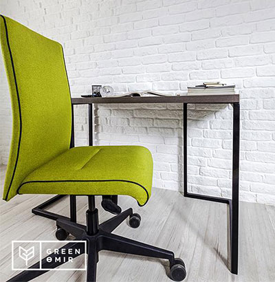

Не секрет, что французы славятся своим изяществом, немцы — пунктуальностью и аккуратностью, а скандинавы — неторопливостью и обстоятельностью. Однако не только в характер людей имеет национальные черты. Так, национальные традиции каждого народа наиболее ярко проявляется и в оформлении интерьера. Речь пойдёт об интерьере в скандинавском стиле. Его основные признаки — натуральность, простота и естественность. Скандинавский стиль в интерьере вобрал в себя такие черты характера этих народов как сдержанность и некоторую суровость, холодность и молчаливость, а также любовь и уважение к природе. Поэтому интерьеры в скандинавском стиле содержат минимум декора и выполнены в светлых естественных тонах из простых и натуральных материалов, но при этом в самобытности этому стилю не откажешь.
Важен каждый лучик
Скандинавские страны не балуют своих жителей обилием солнечного света и тепла. Чтобы согреть душу и тело, жители стараются сделать свои жилища максимально светлыми – за счет больших окон и множества светильников.
Естественное освещение скандинавы ставят во главу угла, поэтому при строительстве домов стараются сделать окна большими. Для оформления окна, вне зависимости от его размера, выбирают мягкие струящиеся занавески, максимально пропускающие солнечные лучи. От темных гардин и тяжелых драпировок здесь отказываются в пользу светлых льняных или хлопковых штор. Цвет занавесок в скандинавском доме тщательно подобран: он гармонирует с общей цветовой гаммой помещения, часто повторяется принт с декоративного текстиля. Здесь нет массивных люстр и ламп; небольшие, но очень яркие светильники, как правило, устанавливают группами – от двух до пяти штук на стандартную комнату. Если нужно зонировать пространство комнаты или выделить какую-либо ее часть, например, рабочую зону кухни или журнальный столик в гостиной, делают акцент с помощью низко свисающих ламп.
Сами светильники имеют весьма лаконичный дизайн. Разнообразие в интерьер они добавляют за счет своего яркого света. Нередко в квартирах скандинавов можно встретить и вовсе голые лампочки без абажуров. А еще они не стесняются свисающих проводов и не стараются спрятать шнуры от электроприборов.
Снежная белизна и очарование дерева
Как и любой другой дизайнерский стиль, скандинавский имеет свои фирменные оттенки. В этих интерьерах правит единственный царь и повелитель – белый цвет. Видимо, опять же в погоне за светом скандинавы выбирают оттенок нетронутого искрящегося снега, который так хорошо отражает солнечные лучи. Главное правило здесь: все, что можно сделать белым, должно быть таким. Пол, потолок, обивка дивана, фасады стеллажей и кухонного гарнитура – основа интерьера всегда белоснежна. К ней позже добавляют и другие оттенки. Зачастую это теплые тона: желтый, терракотовый, бежевый и коричневый. Уважают кремовый, оливковый, синий и вишневый – в том числе за счет их хорошей гармонии с белым.
В отделке помещений также преобладают светлые тона. Скандинавы любят ходить по деревянному полу, подойдут и выбеленные ламинат или паркет. Светлые доски пола часто здесь покрывают прозрачным лаком. Получившийся глянец добавляет легкость и простор помещению. Пол в кухне и санузле зашивают керамической плиткой – традиционной белой или серой, черной или комбинированной.
Потолок в скандинавском доме может быть только самым традиционным – деревянным, либо покрашенным. Жители этих суровых стран категорически против подвесных и натяжных вариантов, как и прочих сложных конструкций на потолке. Стены чаще всего оклеивают лаконичными обоями либо же выкрашивают в белый цвет. Узоры, орнаменты и оригинальные принты применяют только на одной стене, где стоит стол, диван, либо расположено окно, оставляя остальные однотонными. Это еще одна узнаваемая особенность скандинавского стиля.
Для внутренней отделки также используют деревянные стеновые панели. Можно здесь встретить и кирпич, и натуральный камень. Как правило, эти материалы используют в интерьере частично, для выделения определенной стены, ее части или дверного проема. В целом, можно сказать, что ремонт в своем доме скандинавы делают для хозяев, считают новый интерьер вовсе не поводом для хвастовства перед соседями и гостями.
Мебель: прочна и нежна
Мебель скандинавы выбирают под стать своего характера и образа жизни – функциональную, без лишней роскоши и изысков. Она практична и удобна, легко собирается и разбирается. В гостиной обязательно должен быть оборудован удобный мягкий уголок для семейного отдыха и встреч с друзьями: один-два дивана, несколько кресел и низкий, широкий журнальный стол, размером и формой больше напоминающий кушетку. В углу – традиционный дровяной камин или печь-колонка. Это центр скандинавского жилища, без камина интерьер будет выглядеть незаконченно. Причем, устанавливают такие печки не только в гостиных, но и в спальнях. Во многих домах можно встретить уголок для чтения с высокими, до самого потолка, полками и стеллажами и музыкальную комнату с различными инструментами.
Вся мебель в доме скандинава деревянная. Изготавливают ее из особых пород. Чаще всего это светлые лиственные деревья, например, береза, реже – ель или сосна. Изредка предметы интерьера окрашивают белой краской. А вот плетеную мебель можно встретить не редко. Корзины, шкатулки и выдвижные ящики комода придают уют и комфорт комнате. Реже используют и другие материалы, например, на дверцах шкафов-купе можно встретить пластик, а в декоре – металл.
Натуральность и близость к природе прослеживается и в выборе мебельных форм. Все конструкции легки, тонки и изящны, но вместе с тем прочны и добротны. Нежно изогнутые спинки стульев и незатейливые изголовья кроватей – также знаковые для скандинавского стиля детали.
Каждый предмет интерьера по-скандинавски должен выполнять несколько ролей: спальная кровать оборудована вместительными пространством для хранения белья, журнальные столы – полочками и ящичками, а столы обеденные часто и вовсе делают откидывающимися.
Минимализм в деталях
Скандинавы не балуют свои дома излишним декором. Все аксессуары тщательно подбираются. В качестве украшения предпочитают все те же светоотражающие материалы – стекло, зеркала и хрусталь. Матовое или прозрачное стекло отлично пропускает солнечные лучи, преломляет их и отражает, наполняя комнату светом. В гостиных, прихожих и на кухнях можно увидеть всевозможные вазы с интересным наполнением – камнями, лепестками цветов, ракушками или ароматной древесной стружкой.
На стенах этих домов соседствуют написанные маслом картины, семейные фотографии и детские неказистые рисунки в красивых рамках. Любят здесь и постеры, особенно черно-белые. Еще один обязательный элемент настенного пространства – часы различных форм и расцветок.
Кадки с живыми цветами расставляют на подоконниках и на полу. На журнальном столе часто можно встретить россыпь милых морских ракушек, плетеные корзинки с сочными яблоками и стопки газет с яркими обложками.
Яркие акценты создают с помощью текстиля – излюбленного метода наведения уюта у скандинавов. Разноцветные сиденья стульев, немыслимое количество ярких декоративных подушек, шторы и занавески, чехлы для мебели, коврики, постельное белье, покрывала, скатерти и полотенца украшают клеткой и полоской – традиционными для этого стиля узорами и орнаментами. Также популярно изображение елочек, оленей и норвежских снежинок на текстиле. Молчаливые с виду скандинавы не отказывают себе и в юморе. Дизайнерский повод пошутить они находят в забавных принтах, смешных элементах декора, например, выбирают держатель для полотенец с милой мордочкой или диванную подушку с уморительным сюжетом.
Мебель в скандинавском стиле Алматы
Источник: domchel.ru